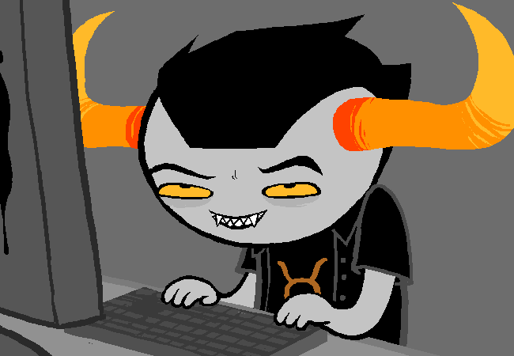
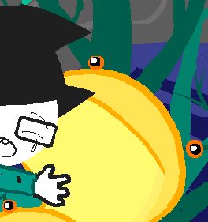
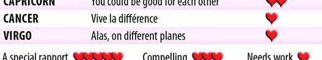

Liveblogging Homestuck: Now with 130% more romantic subtext!
Okay, so under request of some people I keep liveblogging at 2AM!! Kidding, kidding, tonight it’s only 1AM! But did you know that the reason why I feel more comfortable with liveblogging late at night is that people are naturally more creative when they’re tired?? Yep, that’s the reason why you’re ready to get into bed for a good night of sleep and then BOOM story plot idea for a sci-fi triology book with two sequels suddenly happens. With this I’m not encouraging anyone to stay up all night to work on your fanfictions, you guys. I’m not taking any responsibilities! Especially none about school work! Remember, never pull all-nighters to finish your essay, it could turn out that your professor decided to change the consignment date just the day after! This is something that definitely did not happen to me just the other day. Obviously. Definitely. But where was I at?? Right, Rose discovers a sudden interest in alchool!Yeaaah, I don’t know what I expected. We certainly can’t have thirteen y/o kids getting tipsy on screen! That would be a pretty damn wrong example to set for the youngsters reading this! The fact that Rose can’t stand alcohol kind of reassures me since her entering item was one of MOM’s bottles of booze. It seems it may be hinting more at the problems with MOM and Rose’s relationship that have to be overcome for the kid to really grow up.
However, that is not the only thing about Rose’s entry that worried me! Yes, I’m most certainly looking too much into things but I only noticed recently that the hand of Zazzerpan that got severed thanks to Dave in [S] Enter was holding a magic ball. The ones which predict the future, and the ones that Jade loves to smash from time to time, and Rose is a Seer. That hand transformed what would have been a moderately smooth entry (fire tornadoes and fluctuating wizards aside) in a over dramatic clusterfuck of ill-advised decisions. I wonder if Rose’s role as a Seer will cause her trouble, like actively hinder her, or that maybe she will outright refuse it?? Considering that it is now confirmed that Jade Harley is a disgrace in the Space management field, I don’t know what to think. Maybe the girls will have a bit of an hard time with their roles.
Suddenly. If they wanted to make a more indiscrete entrance I would suggest opting for a less flashy ride than a damned enormous spaceship egg… that teleports too.
It’s a she! As expected. Aaaand, she is pretty different from PM.
The word you’re looking for is teleport! And the last one who could do that was our Miss Ass Kicker Extraordinaire, Snowman! So AR, if you hold dear your eyes and/or the both of your arms, I strongly suggest you do not make advances on this lady! Although losing an eye could only improve his aim, honestly.

STEP ONE: Try to be inconspicuous.
FAILED STEP ONE!

“OH CRAP OH CRAP WHAT DO WE DO” “I’ll leave this one to you, bruh!!” “WHAT”. “I’m out, bruh!!”
This is one lady they won’t end up fighting over at least. And sometimes to keep men in their places you only need some presence. ….Or teleporting out of an egg shaped spaceship thing. The last one may be a little more difficult to accomplish for common mortals though.

What the hell was that???
It almost sounded like a huge egg appeared in the sky and landed, and then someone mysterious teleported out of it.
Please, describe to me the sound of someone teleporting out of an huge egg that just landed. Oh, wait! It’s the onomatopoeic “EGG”! Everything explained then!
For the 33th time. I do not want PM to get any near Jack Noir!

You find the agent’s office. But he is nowhere to be found.
BLESS. HE IS NOT HERE. Sometimes Homestuck answers my prayers and I actually get what I want. Jack is probably hiding from the Queen so that she doesn’t force him into that abominable pink dress. Can you blame him?
You eye something on the desk there.
SWEET! Now, PM, this is your moment! You pick the package, slip it in your bag under the letters, and slowly slowly make your way out of this palace—
| > PM?: Grab the box and run! |
Seriously?! That would totally give her away! She could as well be screaming “Hey, I’m a Prospitian intruder and I’m up to no good!” all across the palace! Learn a bit of strategy! The slicker the better, I say.

If you act quickly enough maybe you can grab the package and get out of here before CAN I HELP YOU
FUCK. Umh, alright. This isn’t necessarily bad, he is just a clown hating knife weilding— yeAH NO WE ARE FUCKED. And PM, honey, what are you even saying, you are the one snooping around in his office, the only way you can help him and most importantly yourself is by suddenly developing the Fourth Exile’s teleportation powers and get outta here!
Mr. Noir tells you that ticket had better be notarized and punched in triplicate and presented with the full boondollar penalty plus processing fees, or you are wasting valuable time he could otherwise spend shirking his clerical duties.
And now it’s time to run for real! There is no shame in running if the one you’re getting away from is easy to anger and armed! Also, Mr. Noir really deserves a paycut. You should inform the Queen of this on your way out. …If you get out.

Ticket? Oh, this thing. Ha, ha, look at that, you are holding a ticket. How did that get in your hand? It belongs on the desk with the others. No, you are not here to pay a parking ticket.
You explain to the frightening man that you are here to pick up that green parcel.
Oh, noooo! But PM, we had…. A DISTACTION. Now we got nothing and our intention are in the clear, you have no right to claim that package unless you wanna explain about how a furry squiddles-loving little girl sent you a letter from the past— Yeah, no. He would think you’re fucking with him. Ugh. Even if you had permission to take it, he would just make it as hard as he could.

Jack makes it clear he would rather stab something to death than process the avalanche of paperwork needed to release the confiscated freight. Also any legit courier would have the pickup forms ready to go. In spite of how he’s supposed to be dressed now but isn’t, he ain’t nobody’s fool.
Ahahahah, how funny, Sir Noir! We are certainly not trying to fool you, we never ever thought about it! We think that outfit would, in fact, suit you perfectly! Now… how about… everybody stays calm, and you put that nasty looking thing back… and we return to being diplomatic… we can work something out…?

But perhaps an UNDERSTANDING can be reached.
He gives you a HIT LIST.
nO, WE CANNOT WORK SOMETHING OUT!!!!!!!!!!! WHAT THE FUCK, JACK??!! ABSOLUTELY NOT!!!!!!!!! Jade and John will have to suck it up, they won’t get that package because I forbid PM from even considering it! Those are the symbols of the White Queen and King! Ex-fucking-cuse you, Jack, PM is not gonna betray her kingdom, you self-important piece of crap!


Bring him the crowns. He’ll give you the box.
WHAT THE ACTUAL FUCK. First of all, why would Jack think that PM would be willing to go to such lengths for a measly present (which I think is not that much of a big deal as Jade is making it out to be anyway) and he’s just giving away his sword?? PM still had it. After four hundred years. And she knew how to use it! There better not be anyone’s blood on her hands by then! PM, I TRUST YOU, DON’T DO THIS TO US.

The PARCEL MISTRESS departs with her mission of double agency. You wonder if she’ll actually be so foolish as to attempt to uphold her end of the lopsided bargain. You make a policy of handing out a REGISWORD and a HITLIST to just about everyone who enters your office. But you never think anyone’s actually going to GO THROUGH with it.
I…. actually got worried…. wondering about the meaning of that gesture…. and he just HANDS OUT HIT LISTS TO EVERYBODY?!? Is that the great strategy the Dark Kingdom has come up with to win this war?! Wow. If he is set on killing them he can just go and do it himself. Also, PM is a smart lady, right?? He only asked for their crowns, right?? So if she could get help from the Queen and King themselves, bring him those crowns, they could fool him into thinking they are both dead, right??
You wish you could watch. She’s a deadwoman.
You wonder why she’s so desperate to acquire this package. What could be inside?
It’s actually a nuclear bomb, it will blown up in your face when you open it. It was all planned by our Jade, you see. This will be useful to John so he won’t have to deal with you when he comes to rescue his dad. There, mystery solved, 100% accurate prediction.

PFFFTAHAHAHAHAHA WHAT THE FUCK IS THAT FACE EVEN OH MY GOD I CAN’T BREATHE I’VE NEVER REALLY CARED ABOUT THAT THING BUT NOW, NOW I NEED TO KNOW.
Dave: Punch some cards.

|
You’ve leeched more than enough grist from John to afford a PUNCH DESIGNIX, which for some reason Jade put in the hallway making it kind of hard to walk through your apartment, but whatever. |
Jaaaade…. you’re,,,, supposed…. to be,, a witch of space,,,,,dammit *screams into the void*
Jade keeps dropping a weird assortment of objects for you to captchalogue and punch. You’ve given up trying to identify any rhyme or reason to the thought process behind it.
There probably isn’t any. Are we totally sure she’s not taking naps again??

Your inscrutable thought process leads you to draw the PUNCH DESIGNIX on your SCRIBBLEPAD.
Oooooh, but there is a thought process in that silly head of hers! She can practically draw everything she needs and make Dave create it. I told you that the Pictionary modus was really useful!

Dave, I would have never thought that Jade…. I’m just so sorry.

TG: so i guess this is just a built in designix
TG: which is sort of cool i guess
TG: since i wont have to go downstairs and bang the hallway door into the thing and squeeze through every time i want to punch a card
TG: because of course you couldnt have just put it next to the alchemiter in the first place
But actually, you know what? Jade does put things in incredibly inconvenient places but she does it because she puts stuff in places where it fits neatly instead. Like how the shape of the air-conditioner in her eyes looked perfect for the alchemiter, or the punch designix was placed in the hallway longways. Because it fits and there is no empty space left. The problem is that she doesn’t consider the fact that Dave has to work with those things. It’s just Jade being Jade, not Jade being incompetent in her role. Heh, that kind of reassures me. Also that won’t be a problem when she will be building, so I look forward to that!

And THIS, ladies and gentlemen, is what a Time player and a Space player can accomplish when working TOGETHER. Isn’t it especially convenient to have both someone who can control Time and someone that can control Space on your team?? Even though the trolls most probably do too, I mean… they’re twelve.

You make a tiny AIR CONDITIONER.
This was totally not a waste of time!
Dave, don’t you start too now. By the way the amount of pun-based insults you can throw to a Space or a Time player is literally endless. I hope that there is someone obsessed with puns in the troll team so that we can fully exploit all possibilities!
John: Find the car.

Look!!! He made it!!! And we’re not even in Act 6!!! Incredible, we’re making actual progresses!!!
You find your father’s car near the base of the rock pillar. It is surrounded by caution tape for some reason. You are reminded to be cautious.
Thank you, AR. For your wonderful and impeccable job as a vigilante. And alSO BECAUSE JOHN WOULD HAVE ALREADY GOTTEN HIS HANDS ON THOSE COPIES IF IT WASN’T FOR YOU, YOU LITTLE SHIT.
You cautiously inspect the vehicle. To no one’s surprise but yours, the package and the game are missing.
Someone is bugging you.
Yeah, it’s GC again! John won’t be pleased seeing that their last conversation ended up with her swearing that she would cut his throat.
GC: JOHN 1TS M3 4G41N
EB: who?
EB: oh, that’s right…
EB: the leetspeaking blind one.
EB: go away!
But John Egbert is actually the embodiment of perfection and dorkiness, can’t you see it? Proper reaction is proper. Also THE LEETSPEAKING BLIND ONE OMG. That would be rude if she hadn’t made threats on your life, John.
GC: JOHN DONT M4K3 FUN OF MY H4ND1C4P
EB: which one, the blindness or the leetspeak.
OOOOOHHH, BURRRRRN, BUUUUURRRNN—
GC: 1 4M S3NS1T1VE 4BOUT BOTH
EB: sorry.
I’m beginning to think that this girl is actually untrollable. Would you look at that perfect comeback. That deadpan. I’m not even sure if she’s kidding or serious here?! Where are our master human trolls. Dave, where are you when we need y— Oh, yeah. Busy dealing with your bird curse, sorry. JOHN, WHY ARE YOU APOLOGIZING, YOU SORRY EXCUSE FOR A PRANKSTER, YOU.
GC: YOU C4N M4K3 1T UP TO M3
GC: BY L3TT1NG M3 H3LP YOU
EB: wow, you drive a hard bargain!
EB: but nooooooooooooo.
GC: B3FOR3 YOU K33P TYP1NG MOR3 STUP1D O’S 1N TH4T WORD
GC: JUST L1ST3N 4ND DO WH4T 1 S4Y
GC: YOU KNOW YOUR3 GO1NG TO 3V3NTU4LLY 4NYW4Y
GC: B3C4US3 YOUR3 4 N1C3 GUY 4ND K1ND OF 4 TOT4L W33N13 PUSHOV3R
Wow…. Wow, she nailed him. Which conversation is this again?! The second?! She’s either really good at figuring out people or she’s lying about trolling linearly.
EB: yeah, well you’re a huge…
EB: oh man, whatever, what do you even want.
GC: 1M MOT1V4T3D BY S3LF 1NT3R3ST
GC: TO H3LP YOU 4DV4NC3 MOR3 QU1CKLY
GC: B3C4US3 1V3 GOT YOUR WHOL3 ADV3NTUR3 R1GHT H3R3 1N FRONT OF M3
EB: do you have a braille screen or something?
GC: SHHHHHHHH!
GC: 4NYW4Y TH3 PO1NT 1S
GC: 1TS LONG AND BOR1NG
GC: 4ND YOU COULD ST4ND TO SK1P SOM3 ST3PS
Basically the girl wants this webcomic to pick up its pace. I share the feeling.
EB: i don’t really understand.
EB: so you can “see” my whole future there, right?
EB: by just like, scrolling around on some computer thing that lets you pick what time to talk to me?
EB: how can you be bored by my long boring future, why don’t you just scroll around to wherever you want like the other weirdos are doing?
Truuuuuueeee. You raise a good point, John. Thank you. I still don’t feel like trusting her. This is suspicious and I don’t know if I’m ready to give GC the benefit of the doubt.
GC: OK 1 C4N DO TH4T
GC: 4ND 1 4M
GC: 1 GU3SS WH4T 1 R34LLY M34N 1S
GC: 1 JUST W4NT TO M3SS W1TH YOU
And this is why I won’t give her the benefit of the doubt.
EB: oh ok, that sounds really great and helpful!
GC: 1 M34N M3SS W1TH TH3 T1M3L1N3
GC: MY FR13NDS 4LL TH1NK TH4T YOU C4NT R34LLY CH4NG3 4NYTH1NG
GC: TH4T YOUR T1M3L1NE W3'R3 CH4T-HOPP1NG 4ROUND 1S S3T 1N STON3
GC: NO M4TT3R WH4T W3 S4Y OR WH3N W3 S4Y 1T
GC: 4ND TH3YR3 PROB4BLY R1GHT
GC: BUT 1 DONT C4R3
GC: 1 W4NT TO M3SS W1TH 1T 4ND T4ST3 WH4T H4PPENS
GC: >:D
I’ve played enough visual novels to know where this is going?? Doesn’t successfully messing with this timeline just create another parallel one where things go differently?? Hell, there are probably a shitload of them but you just don’t know, because you are part of this one and you’ve never seen other outcomes. Like… if someone asked you to choose between doing three random things: clapping your hands, raise them or wave them. The timeline in which you are would branch in three different ones. Say you chose to clap them, but the person who asked wanted you to wave them instead. So they get back in time and try to make you change idea, eventually succeeding. They would get what they wanted but the timeline in which you clapped your hands would still be existing and untouched. It’s kind of hard to explain??! Or maybe it is hard because it doesn’t really make sense. Plus the rules of alternate timelines change in every work of fiction.
EB: sounds dumb.
EB: but if it means you’re going to help me, then go ahead and help me i guess.
GC: L3TS G3T YOU TO TH3 G4T3 F1RST
GC: 1TS NOT F4R
GC: 1 SN1FF3D OUT 4 M4P OF YOUR PL4N3T
EB: whoa, you’ve got a map?
EB: where’d you get it?
GC: JOHN W3 AR3 SO MUCH B3TT3R TH4N YOU IN 3V3RY R3SP3CT 1TS R1D1CULOUS
EB: can i have it?
GC: 1TS HUG3
GC: 4ND MOSTLY 1RR3L3V4NT
GC: H3R3 L3T M3 DR4W YOU 4 SM4LL S3CT1ON OF 1T
GC: SHOW1NG YOU WH3R3 TO GO
EB: ok.
I don’t know what to think about this but John just agrees because he is a “total weenie pushover”. Also, he is always willing to take input from anyone as long as there is some sentient being willing to do so nearby. AND IT’S NOT A GOOD THING. AT ALL.
– gallowsCalibrator [GC] sent ectoBiologist [EB] the file “GOH3R3JOHN.G1F” –
Wait, she said she would draw it. And yet she claims to be blind. Oh, well.


And John’s face says it all. I’m pretty sure I pulled the exact same expression though. And even if the map is awful she knows how John looks like! You’re not fooling me, lady! Maybe troll blind is the equivalent to human nearsighted??? Honestly, she doesn’t sound like she is lying about that. But it is also evident that she can see. Kinda… sorta. Is there some kind of cultural misunderstanding going on?? Or maybe someone told her how John looks like. And she managed to draw a map worse than the one Spades Slick made, something that I never thought I would have seen in this webcomic.
EB: this is the worst crap i have ever seen.
EB: what am i looking at here?
GC: 1TS TH3 B3ST 1 CAN DO
GC: >:[
EB: ok sorry but it’s useless.
EB: what’s with these colors.
GC: 1 P1CK3D ON3S TH4T SM3LL N1C3
She smells colors?? She did it with Rose too. Some sort of synesthesia, maybe?? I don’t know.
EB: couldn’t you just, like…
EB: crop the world map.
EB: i thought you guys were THE BEST.
Naaah, I’m sure they just have a pretty bad God Complex. All of them. That’s actually impressive. They are a superior alien race bluh bluh etc etc… Rose would over-analyze the hell out of those guys. Wait, she will. Just give her some time.
GC: SHUT UP MY M4P 1S F1N3
GC: LOOK 1TS NOT 3V3N TH4T F4R 4W4Y
GC: 1LL L34D YOU TO 1T
GC: 1TS 4 B1G P1P3
GC: YOU JUMP 1N
GC: TH3 W1ND W1LL T4K3 YOU TO TH3 G4T3
GC: 1TS 4 SHORTCUT
WHOOOOOAAAAA, JUST YOU FUCKING WAIT ONE MOMENT!!!! THE BIG PIPE….. YOU DON’T MEAN THE ONE WE SAW IN THE MINIGAME, RIGHT???!!!! BECAUSE THERE WAS HIS DENIZEN IN THERE???!! GC, WHAT THE FUCK ARE YOU PLANNING!!??!!
EB: you mean The Breeze?
GC: Y34H WH4T3V3R
GC: L3TS G3T MOV1NG JOHN
GC: 4R3 YOU R34DY TO FUCK UP TH3 T1M3L1N3???
EB: sure.
NO. BUT…. WAIT. JOHN. Goddammit, John Egbert, stop taking orders to everyone who has an opinion to voice already!

Is Vodka Mutini enjoying the show back there? Is it safe to watch such a violent show for a young kitty?? Then again he was pretty unfazed while he and Rose were surrounded by flames. Who knows the trouble he has seen in that laboratory! and also aww, would you look at that! Rose is slaying imps as she knits a cute new scarf! That’s some multitasking abilities you’ve got there, girl!

THAT IS A LITTLE BIGGER THAN YOUR AVERAGE IMP, I DOUBT THOSE NEEDLES WILL DO MUCH. Mutie, do something! Your owner is in trouble!

OH GOSH THERE SHE GOES AIMING FOR THE EYESSSSSS

OH MY GOD ROSE WHAT THE HELL AND HOW DID YOU JUMP THAT HIGH ANYWAY THAT’S SOME STRIDER BROTHERS BULLSHIT YOU’RE PULLING HERE

OH MY GOD OH MY GOD OH MY GOD. AND YOU, MYSTERY ARM IN THE BOTTOM RIGHT CORNER, GET OUTTA THIS PANEL, I’M BUSY ADMIRING ROSE’S BADASSNESS AND GETTING SLIGHTLY WORRIED ABOUT THE CRUELTY OF HER METHODS.

JESUS CHRIST. IS DAVE SEEING THIS. I FEEL LIKE HE SHOULD BE SEEING THIS. PLEASE SHOW THIS TO DAVE STRIDER.

Your fave is problematic: The Rose Lalonde version.
- THIS.
- ALSO THIS.
- THIS.
- DID I MENTION THIS.
- AND LAST BUT NOT LEAST, THIS.
Passive-aggressive behavior my butt! That is plain out aggressive! Rose, honey, we could have just alchemized a boat if you were so impatient to go exploring!

And there she stands. Unperturbed. And under three inches of fucking yarn, Dave yearns for attention.

Okay but this is a panoramic of the whole island and??? Jaspersprite is nowhere to be seen??? Did Mom really kidnap him?? Did she oh-so-solely miss him?? Did she bribe him with fresh fishes?? The plot thickens.
TG: im building up your house
TG: by the way why do you live in this weird compound
TG: do you host east european industrial raves
You know that kind of sounds like something that MOM would do. With lots of alchool, and dancing. I mean she does do something in her life to have all that money, probably something legal too, and I would bet on business lady if I had to. And she hosts meetings with big shots. And she is a single mother. Also she knew about the apocalypse and Sburb beforehand. That’s a lot of pressure on one woman, I’d say that her problems with alcohol are not justifiable when she is raising a kid, but she does deserve a bit of clemency.
TG: maybe take one of your needles and puncture the base of its skull
TG: does it even have a skull
TG: or a brain stem
TG: can you find out
TT: That sounds malicious.
TG: what
TG: but you just rigged the thing with an oedipal harness and rode its torso like a log flume ride down a magical rainbow
TT: That was self defense.
TT: Murdering a wounded behemoth in its sleep strikes me as unseemly.
TG: this is bullshit its an unfeeling monster who gives a fuck
TT: Maybe you could replicate a pillow I could use to smother it.
TT: Make it a clean hit.
TT: I would use one of mine but they’ve all mysteriously gone missing.
Yes. In a battle of inconspicuous messages left by the fridge, twenty fucking feet high wizard statues delivered by crane, thank you notes signed in blood and so on, and so on…

– grimAuxiliatrix [GA] began trolling turntechGodhead [TG] –
GA: You Command The Seer
GA: So You May Have Some Insight Into Her Disposition
TG: who
GA: The One Who Is A Little Snooty
TG: oh yeah sure
TG: i command her alright i am like the pimpmaster hustledaddy of all snippy bookshrews
GA: Thats An Exotic Title
GA: I Thought You Were The Knight
TG: wrong what do you want
GA: Have You Found Her Demeanor To Be Chilly
GA: On A Basis Of Personal Interaction That Hypothetically Extends Beyond The Context Of A Short Lived And Lackluster Trolling Effort
TG: what the hell
THE ONE WHO IS A LITTLE SNOOTY. BLESS YOU, GA. Wow. This one needs translation. There y'all go guys: Do you know what tickles Rose Lalonde’s fancy?
GA: I Thought Your Familiarity With Her May Allow You To Furnish Me Insight
GA: She And You Are Familiar Isnt That Right
GA: She Perhaps Even Regards You With Uh
GA: Endearment
TG: you have no idea dude she is so in my grill
TG: like a stray hotdog that rolled down there
TG: and now its too much trouble to fish out with the tongs
TG: so you just watch it like crack and turn black
I’m definitely dabbing this as the Dave Strider Syndrome. So let me get this straight for you once and for all, Dave. Rose doesn’t have the hots for you, John doesn’t have the hots for you, Jade… doesn’t …. have the hots for you, I think… probably not. It’s really hard not to make assumptions when she does so much gushing, okay?!
GA: Um Is This
GA: A Common Sort Of Practice In Human Courtship
GA: Watching Oblong Meat Products Tumble Into Places They Dont Belong
TG: man wait
TG: whats this about
TG: you have a thing for her dont you
TG: dont deny it bro its obvious
HOW IS IT OBVIOUS. Oh my gosh. Just because she wants to get past that layer of dry humor and passive-aggressive baloney. …Do I really have to start considering troll-human relationship?? Like for real?? And what about cultural differencies??
GA: Am I Being Accused Of Falling Prey To The Human Dysfunction Of Amorous Inclination
Yup. You are, GA. You definitely are. It’s mainly because Dave is convinced that you’re a boy for some reason though. Don’t ya worry, it’s just your everyday heteronormativity. However, you did opt for a diversion instead of a direct answer… Hmmm. GA, tell us the truth! Are you hunting for the Lalonde booty?!? You can tell us, we won’t say a thing! It will be a secret between you and the audience!
TG: hahahaha so terrible
TG: what a transparent dodge
TG: all hiding behind your alien shit
TG: just admit it
TG: you want me to help you win her over
GA: I Just Would Like To Gather
GA: Some Means Of Gauging Her Sincerity
I just went “AAWWWW" reaaaally loudly. Somewhat embarassing. GA, stop being so adorable! It does sound like she is just seeking friendship here though.
TG: ok well its easy
TG: for everything she says take her to mean just the opposite
TG: see not everybody always means literally what they say the way john and jade always do
Okay, first of all what makes you think that GA even knows them, second
GG: you see not everybody always means the opposite of what they say the way you and dave always do
I prefer the John and Jade way. Also the fact that he named specifically John and Jade when offering an example of sincere and upfront people is cute.
GA: Maddening
GA: How Do Humans Forge Meaningful Relationships Using Such Communication Patterns
Busted. We don’t. We just fall into this circle of insincerity, confusion and witty comebacks until we grow accustomed to the other’s way of fucking with us and decide that they’re worthy of our time.
GA: Perhaps It Is The Human Riddle That Is Truly The Ultimate Riddle
GA, I made that joke like two weeks ago, you’re so behind.
TG: oh my flipping christ
TG: ok if you want rose to dig you you got to leave that crap in the shitty scifi novels where it belongs
GA: It Was Not A Sincere Remark
GA: I Have Been Practicing
GA: Your Human Sarcasm
TG: oh ok
TG: that was pretty good
TG: maybe even too deadpan but its a start keep at it
GA: Very Well
GA: I Am Beginning To Feel As Though I Am The Only One Working On Our Friendship
TG: hahaha yes youre on a roll
GA: That Was Sincerity
TG: oh
Oh my God. What a mess. Your last conversation with Rose was just fine, GA. She was already kind of intrigued, if that was what you were aiming for.
TG: alright look
TG: if you want to keep her attention you got to pull out all the stops
TG: reverse psychology mind games all sorts of machiavellian bullshit
Dave, that is just the opposite of what Rose would need in a romantic relationship…UNLESS YOU’RE DOING THIS ON PURPOSE. SABOTAGE.
TG: i mean unless youre really smooth and inherently likeable like me which youre not
I’m sorry to say this…. But you come across like an huge jerk most of the time. Especially lately. Likeable is not the first adjective that comes to mind. We forgive you for now because we know it’s just your way to hide your insecurities, kid.
GA: Then
GA: Keep Saying The Opposite Things
TG: thats kind of the obtuse alien way of getting it but yeah
TG: be like
TG: an antagonism ninja
TG: like her
TG: i dont know you sort of remind me of her anyway so maybe thats a good thing
TG: it could be a horrible thing though
Yeah, he is right. Not only they talk alike but they also react similarly. Though GA is often more direct about things. Maybe that’s because she doesn’t like sarcasm. Which makes her effort to try it absolutely ADORABLE.
GA: It Sounds Like
GA: You Are Advising Me To Troll Her Again
GA: Which I Have Tried
GA: It Proved To Be A Fruitless Endeavor
TG: yeah i guess i am
TG: i guess im saying be a less shitty troll
GA: Okay
GA: I Believe I Understand How To Proceed
TG: good luck bro
SHE. IS. A. GIRL.

I love how John and Jade absolutely loathe it when trolls contact them while Rose here always looks like she’s having the time of her life.
– adiosToreador [AT] began trolling tentacleTherapist [TT] –
AT: hIIII, sO,
AT: yOU GET BOSSED AROUND BY THE KNIGHT, oK, gIVEN THAT, i HAVE A QUESTION,
Oh, no. You were already done for when you said she gets “bossed around”. I fear what awaits you, AT.
AT: oH, tHE ONE WHO’S SUPPOSED TO BE "cool”, i THINK,
AT: tHE SUN GLASSES GUY,
THE ONE WHO IS SUPPOSED TO BE “COOL”. THE SUN GLASSES GUY. Oh, gosh. I love this…. guy?? C'mon, it’s a guy, otherwise that persterlog with Dave before would lose half of its beauty. I will just use male pronouns and retro edit if I will need to. I won’t. He is a boy. It’s obvious.
TT: Why would someone wear sunglasses while using a computer?
AT: iIII DIDN’T SAY ANYTHING ABOUT A COMPUTER, bUT,
AT: yES, hAAAAAH,
AT: i THOUGHT THE SAME THING ABOUT HOW ASININE THAT IS,
AT: sO, yOU KNOW THAT GUY, uMMM,
TT: I know that anyone committed to such an affectation could only be striving to mask a severe insecurity complex, and likely harbors a crisis of self-image.
TT: I’ve been known to lend my charitable attention to such people, but only “bossed around” by them insofar as the psychiatric professional has cause to humor the demented for analytical purposes.
TT: Or maybe as a lab chimp commands the zookeeper’s interest in its shit by forcing him to duck under its trajectory now and then.
Rose, don’t go all therapist mode now. Literally everybody has noticed that Dave has issues. Nobody is really able to deal efficiently with them though. John never judges but it’s more because he doesn’t give it too much thought than because he is trying to make Dave more comfortable. Jade is able to cut through his crap but doesn’t really know why the crap is there in the first place, if you get what I mean. And Rose… actually understands but does nothing to help him. She’s like those fictional therapists that make the client sit and go “Hmm” and “Interesting” while they talk but basically do nothing for them.
AT: oK, wOW, i DIDN’T UNDERSTAND THOSE THINGS,
AT: bUT, uHH, i MEAN DAVE,
TT: Oh, that guy.
AT: yEAH, oK, gIVEN THAT, i HAVE A QUESTION,
AT: aBOUT HIM,
AT: i WANT TO KNOW ABOUT HIS EMOTIONAL VULNERABILITIES,
AT: aND, uM, wHAT ARE THE TENDER SPOTS THAT ALL THOSE, uHHH,
AT: dEVICES HE EMPLOYS TO CONCEAL THEM, uHH, lIKE ALL THE THINGS HE SAYS HE THINKS ARE FUNNY,
I see. You wanna know what is the true identity of Mr.Cool Kid. The mystery that haunts us all. And you are rather set on it. But seriously, couldn’t you try and troll someone else? Why not say… Jade?? You could even get along! But no, Dave it is. If you wanna keep getting destroyed by ironic semantics and double entendre, be my guest. Not gonna stop you.
TT: Tender spots?
TT: Your word choices are evocative.
TT: Is your design to couple with this gentleman?
AT: wHOAAAAAAAA, nO, nO, wHOA,
AT: oK, nO, tHAT JUST MADE ME FEEL UPSET TO THINK ABOUT,
AT: i JUST WANT TO REALLY TRY TO BOTHER HIM, iT’S HARD,
Do not lie to yourself, AT!!! WHY ARE ALL THE TROLLS MAKING ON OUR KIDS ALL OF SUDDEN. I’M NOT READY FOR THIS.
TT: If you’re trying to get his goat, you should know he only stocks the animal in the first place for ironic purposes.
AT: nO, i’M NOT REALLY INTERESTED IN HIS EARTH GOAT, bUT IF THAT WAS A FIGURE OF SPEECH THEN i GUESS THAT’S OK,
TT: Then we’re agreed; you are hellbent upon literally seizing his shrill, bearded livestock.
TT: I’ll assist you.
ROSE WILL HELP. THIS IS GOING TO BE GLORIOUS.
TT: I suppose what I’m saying is this.
TT: Drop some hard, peer-reviewed motherfuckin’ science on his ass.
TT: Some seriously government funded shit.
TT: It will destroy him.
AT: aAAAAHAHAHAH, yES,
AT: tHIS IS THE IDEA THAT i LIKE,
TT: Your obvious cunning with words should depants Strider with such vivid empyrean tempest, a nether-regional sonic boom is certain inevitability.
TT: But even so.
TT: Consider me at your disposal to help craft a comeuppance of such unqualified devastation, the angels will weep pearlstrings of little urban fellows cantillating an unbroken chorus of Oh Snaps.
I never realized how similar Rose and Dave’s ways of trolling people are until now. Those two have obviously spent too much time dealing with each other. I wonder who picked up the style of who??
AT: pLEEEEASE,
AT: i THINK i AM PERFECTLY CAPABLE OF MANUFACTURING THESE ALLEGED “dope” HUMAN RHYMES,
AT: aND STARTING SOME SICK FIRES,
AT: i DON’T NEED YOUR CHARITY, tHAT YOU SAID YOU LEND,
AT: tO, uHHH,
AT: eARTH MONKEYS WHO TOSS AROUND POOP, oR SOMETHING LIKE THAT,
AT: yOU’RE PRETTY SNOOTY,
AT: tHANKS FOR YOUR HELP, bUT I DON’T NEED YOUR HELP,
AT, did you just refuse Rose’s help??? with poetry??? have you ever seen Rose Lalonde rap??? it’s a majestic spectacle, you only see something like that once in your life. You’re going to regret this choice.
adiosToreador [AT] blocked tentacleTherapist [TT]
adiosToreador [AT] unblocked tentacleTherapist [TT]
AT: oOPS, sORRY, i DIDN’T MEAN TO BLOCK YOU,
TT: uMMMM,
AT, GET YOUR ACT STRAIGHT. Rose, stop mocking the poor kid THIS INSTANT. ç.ç I’m really starting to think that AT took trolling lessons from CG and this is the disastrous result. He tries really hard to come off like a jerk but he can’t!! that’s adorable they’re all adorable i’m drowning in adorableness

Jaspersprite, last seen along the shore, suspiciously close to the water, he is as merciless as his former owner, has tentacles and he is hungry, we advise every fish consort to stay inside and don’t panic. Keep the young ones close and the victim count to the minimum. Further communications will be transmitted later.
…Remind me why Rose is circumnavigating the island on her new ogre raft??? oh, she has to beach the thing, under Dave’s suggestion. Also I would assume Zazzerpan was giving me the middle finger if I didn’t know any better.
– grimAuxiliatrix [GA] began trolling tentacleTherapist [TT] –
GA: Your Dark Spectacled Friend Has Advised Me On A More Effective Method For Trolling You
GA: I Think His Contention Is That This Strategy Will Have The Opposite Of The Intended Effect And Precipitate A Sort Of Bond Between Us That Is Established In Mutual Antagonism
GA: What Do You Think About This
A big fail for Mr. Strider!! And it is not even the first time when it comes to trying to prank intellectually superior girls!! When will he learn. So maybe he is not the best suited to troll GC either! :-|
TT: I think you’re shrewd to have recognized his ploy of sabotage, and you’ve earned my compliments.
GA: Ah See It Is Working Already
*looks at cup of tea in own hand* *remembers the last attempt made to drink and/or eat while reading homestuck* *remembers the tea up my nose, the choking, and the almost dying because of john egbert* …Maybe I should wait until they are finished with talking.
GA: Remember The First Time We Spoke
TT: Yes, but you said it wasn’t the first time you spoke to me.
TT: We’ll graciously omit my embarrassing skepticism however.
GA: The First Time You Spoke To Me Was The Second Time I Spoke To You
TT: This conversation doesn’t sound like your first time either.
GA: This Is Your Second Conversation With Me But Is My Seventh With You
TT: And when exactly does your maiden encounter take place?
GA: Thats Next Time
Oh, maiden. That reminds me, that to nobody’s surprise GA is a Virgo. I’d be all over those signs compatibility charts if it wasn’t for the fact that all the kids are Sagittarius except John for plot purposes that are still unclear. Can’t really take them into account to make predictions. …But just you wait till I get to those trolls…
TT: So to clarify.
TT: If the matching of my first with your second is denoted by 1=2, then the sequence would be:
TT: 1=2, 2=7, 3=1, 4=?, …
GA: Yes And The Rest Of The Sequence Is Simply
GA: 4=3, 5=4, 6=5, 7=6
GA: Unless My Future Self Stowed Another Conversation In Between One Of Those Which Is Entirely Possible
GA: But Urrgh I Dont Want To Think About That
TT: Why is it that when the subject of temporal mechanics is broached your sparing troll intellects etcetera etcetera.
Such perfection. The fact that she didn’t even bother quoting the whole thing makes it even better.
GA: See That Is What I Mean Rose You Are Not As Dumb Of A Girl As I Was Initially Lead To Believe
Didn’t CG say something along the lines of this about John?? You guys are getting attached to the human kids, it happens even to the best, don’t worry. And what in the word could ever make you think that Rose is dumb?!!? ….I WON’T REST EASY TILL MOM’S BOOZE IS ALL AT THE BOTTOM OF THIS LAND’S OCEAN.
TT: You mean based on the first impression I am apparently about to make in our next conversation?
GA: Yes
TT: What could I possibly say that will leave such an imprint?
GA: That Is Why I Have Contacted You Now
GA: I Will Send You A Copy Our First Conversation Directly From My Chat Log
– grimAuxiliatrix [GA] sent tentacleTherapist [TT] the file “ConversationWithAVeryStupidGirl.Txt” –
TT: I guess being forced to cooperate with a stable time loop is the only plausible explanation for my remarks.
Please take a look at the file name. Whatever was in there scared even Rose?? She deems it impossible. Sha ha got to be forced to write something like that.
GA: Yes And Then I Found It Sort Of Curious That During My Next Conversation With You Your Various Mental Endowments And Wherewithals Were Not As They Seemed
GA: I Suspected The Stratagem Might Be A Counter Trolling Measure But Then Was Not So Sure And Further Examination Grew Warrant
TT: And what if my counter-counter measure is to choose not to transcribe this dialogue accurately in the future-first place?
GA: But See I Have Edited The Copy Already In Ways That Will Remain Secret For Now But You Will Discover Once You Type It
GA: So You Are Destined To Edit It No Matter What And What You Submit Will Be What I Once Read Regardless
GA: !
GOSH, IT’S LIKE GA WAS BORN SPECIFICALLY TO TROLL ROSE. SHE IS ABSOLUTELY PERFECT. AND THAT EXCLAMATION POINT AT THE END. SHE IS SO DETERMINED IT’S INCREDIBLE.
TT: Unless I decide to copy it word-for-word!
GA: Yes Unless I Lied About Editing It In The First Place
GA: Either Way Through Knowledge Of What You Will Say I Have Precisely Engineered The Nature Of Your Transgression
GA: !!!
OH MY FUCKING GOD I’M LAUGHING SO HARD. O.W.N.E.D. Rose Lalonde O-W-N-E-D, for the first time in her life. UTTERLY COMPLETELY DESTROYED. And look at how proud of herself GA sounds?? That’s fucking adorable?? Like I don’t even know you, missy, but congratulations, I’m very happy for you??
TT: I guess the only pointless question we haven’t exhausted is, why?
TT: Why the convoluted artifice?
GA: Dave Raised Insight Into The Human Psychology Of Friendship Development
GA: By Allotting You Your Side Of The Conversation I Have You At The Disadvantage In Your View And You Will Seek To Reclaim Higher Ground
GA: In Successive Conversations
GA: 4=3 And 5=4 And Such
GA: Your Demeanor Will Be Terse If Not Saturated With Disdain And It Will Cause Me To Be Confused And Question Your Motivation
GA: But Now I Know Your Motivation Because I Am Supplying It Here And Now
GA: They Will Be Simple Acts Of Friendly Human Retaliation
TT: So you’re not only rigging the first impression I make on you, but orchestrating my revenge for the rigging as well?
GA: Yes
GA: It Seems Friendship For Some Humans Is A Basic Aggregation Of Shallow And Insincere Hostilities
TT: That’s an interesting take on it.
TT: But now I know for sure Dave isn’t behind this plan.
TT: It’s too complicated.
Rose, you finally found someone who is as smart as you, shouldn't you be happy?? And don’t underestimate Dave, he is… nah, you’re right. He wouldn’t have been able to come up with something like that in two thousand years. Not because he lacks the smarts… I mean, yeah, that too, but mostly because he wouldn’t put so much dedication into anything. So apparently I get first row tickets to the slow demise of Miss Snarky Queen?? I shall enjoy this thoroughly. Thank you GA, for making this possible.
GA: I Dont Understand
GA: Who Better To Coordinate Such Events Than The Knight Of Time
TT: You’re awfully quick to his defense.
TT: Are you sure you don’t have a thing for him?
TT: It’s ok, bro. You can admit it.
GA: I’m Hopping To 8=8
GA: Ideally You Will Have Long Since Discarded This Train Of Thought
WHY DOES EVERYBODY THINK THAT GA IS A BOY??? And GA just decides to ignore every implication made regarding " The Human Dysfunction Of Amorous Inclination" for the time being.
TT: Ok.
TT: I’m going to talk to my dead cat.
The real question here is if he will answer her or if Rose will realize that prototyping her cat was the stupidest thing she has ever done.
I may or may have not reread this conversation three times. I will leave it up to your imagination. It’s just so great to see some good interaction between girls!! The Jade/Rose dynamic has been honestly kind of disappointing so far. Rose only contacts her when she wants information about future events, they have never had a casual conversation! That’s so lame. There has been decidedly more space given to boy/girl interactions. Dave and John are fine, they haven’t talked in two decades but they make it pretty obvious (ESPECIALLY DAVE) how much they care about each other. I guess what really bothers me is the lack of girl/girl interaction. Jade has only talked to John, Dave and CG and has had like… what?? two pesterlogs with Rose?? Unfair. I want to see her properly interact with girls.

OH MY GOSH OH MYYYYYY WOULD YOU LOOK AT THAT SHE’S SO PRETTY GODDAMN WHAT A CLASSY LADY
Best hair in the webcomic so far. It defies gravity just a tiny little bit like always but I will let it slide.
Do we have to do this with every troll before they get introduced though because it will take YEARS. Ugh. And for how much will I have to go on without knowing their names. Because you don’t even know how many times I have to retro-edit posts, I always get GC and CG mixed up.

IT’S ADIOSTOREADOR. Let’s see what he has in store for us. *looks at tea next to me* …definitely not yet.

Those drawings actually wouldn’t be that bad if he didn’t purposefully set their quality to Retina Burner when he finishes them.
– adiosToreador [AT] began trolling turntechGodhead [TG] –
AT: oKAYYYY, mY BROMO SAPIEN,
AT: r U READY,
AT: tO GET STRAIGHT IN, FLAT DOWN, BROAD SIDE, SCHOOL FED UP THE BONE BULGE,
AT: bY A DOPE SMACKED, TRINKED OUT, SMOTHER FUDGING,
AT: tROLLLLLLLLLLLLLLLLL,
BROMO SAPIEN. I’M GOING TO DIE. TELL MY FAMILY I LOVED THEM DEARLY. THIS IS HOW I DIE, THIS IS WHERE I LIE.
TG: dont care
I just scrolled through the conversation and Dave doesn’t even say anything anymore!! Awww, laaaaaame. I was waiting for a majestic(ly cringe-worthy) rap battle!!!
AT: oK, lET ME,
AT: oRGANIZE MY NOTES HERE,
AT: oKAYYY,
AT: (tURN ON SOME STRICT BEATS MAYBE, iT WILL HELP TO LISTEN TO THEM WHILE i DESTROY YOU,)
Dave may refuse to acknowledge you but I won’t!! I know you put effort into this!! Here I’ve got something to set the atmosphere:
AT: wHEN THE POLICE MAN BUSTS ME, aND POPS THE TRUNK,
AT: hE’S ALL SUPRISED TO FIND I’M TOTING SICK BILLY,
AT: wHOSE,
AT: gOAT IS THAT, hE ASKS, wHILE HE STOPS TO THUNK
AT: aBOUT IT, aND i’S JUST SAY IT’S DAVE’S, yOU SILLY
AT, NOOO! I thought we established that the Earth goat should have been left out of this! Rose, what have you done! ALSO SO MANY TYPOS.
AT: gOOSE,
AT: bUT THE MAN SAYS, gOOSE!
WHAT DOES THIS EHAT IS THUS SEND HELP,,,,, i’m going to die…
AT: aND i SAY SHIT SORRY, i DIDN’T KNOW IT WAS HONKTRABAND,
….Honktraband? Are we…. contrabanding horns now? Is that a troll society thing?! I don’t understand!
AT: i AM GETTING OFF THE POINT, wHICH WAS,
AT: aBOUT THIS HOT MESS DAVE, tHAT YOU GOT LANDED IN,
AT: lIKE THE COP i MENTIONED, bUT INSTEAD OF YOUR BADGE,
AT: aND YOUR GUN, IT’S YOUR ASS THAT YOU HANDED IN,
AT: (aND THEN GOT HANDED BACK TO YOU,)
AT: cAUSE THAT’S HOW HUMANS GET SERVED,
AT: aND GUYS LIKE YOU DESERVE TO UNDERSTAND THAT iT’S,
AT: a CIRCLE AND HORNS IN YOUR BUTT THAT GOT BRANDED IN,
WHAT. AT, let’s keep this Safe For Work, shall we?!
AT: (uMM, bEFORE i GAVE YOUR ASS BACK TO YOU, i DID THAT, iS WHAT i MEAN,)
AT: bUT i MEAN, gETTING BACK TO THE POINT, oR MAYBE TWO ACTUALLY,
AT: tHE FIRST IS YOU SUCK, aND THE SECOND IS HOW i SMACKEDYOUFULLY,
AT: (oH YEAH, tHAT RHYME WAS SO ILLLLLLLLL,)
That didn’t even rh—
AT: bUT NO, jUST JOKING, lET’S SEE, hOW CAN i PUT THIS TACTFULLULLY,
Oh. Tacte— AT, YOU CANNOT MAKE UP WORDS WHILE RAPPING. I REFUSE TO BELIEVE THAT WAS A TYPO.
AT: i MEAN THE POINTS ON THE HORNS ON MY HEAD,
AT: cOMING AT YOU THROUGH TRAFFIC,
AT: aIMED AT THE TARGET ON YOUR SHIRT THAT IS RED,
AT: wE’RE ABOUT TO GET MAD HORNOGRAPHIC,
AT: (i MEAN SORT OF LIKE A GRAPHIC CRIME SCENE, nOT LIKE,)
AT: (aNYTHING SEXUAL,)
AT: (eRR, wHOAAAAA,)
AT: (nEVERMIND,)
We got it, AT! We got it! You don’t have the hots for Dave! You don’t need to remind us every five seconds, that only makes it suspicious!
AT: i’M FORCING YOU TO BE LICKING, (aND lIKING,)
AT: gRAB MY HORNS AND START KICKING, lIKE YOU’RE RIDING A VIKING,
AT: cAUSE i’M YOUR BULLY, aND YOU’RE NOT IN CHARGE,
AT: yOU THINK YOU’RE IN CHARGE BUT YOU’RE NOT IN CHARGE,
W-What… what is Dave licking again…? AT, please go to Troll church, you need Troll Jesus.
AT: i’M IN CHARGE, cAUSE i’M CHARGING IN,
AT: yOUR CHINASHOP,
AT: bREAKING, uH, yOUR PLATES AND STUFF, WHICH i DON’T REALLY KNOW,
AT: wHAT THE PLATES ARE SUPPOSED TO REPRESENT, bUT,
AT: (fUCK,)
AT: iT’S JUST THAT YOU THINK YOU ARE THE COCK OF THE WALK’S HOT SHIT
AT: bUT WHEN IN FACT YOU ARE NOT, mORE LIKE YOU ARE,
AT: sOMETHING THAT RHYMES WITH THE COCK OF THE WALK’S HOT SHIT,
AT: bUT IS SO MUCH WORSE THAN THE COCK’S SHIT,
SOMEONE STOP HIM…. NO ACTUALLY DON’T. HE SEEMS TO BE HAVING FUN.
AT: sO, gIVEN THAT, lET ME BE THE FIRST,
AT: tO SAY YOU ACT LIKE YOU’RE GOLD FROM PROSPIT,
AT: wHEN YOU’RE REALLY COLD SHIT FLUSHED FROM DERSE,
AAAAAAHHHH!!!!!!!! OH MY GOD OH MY GOD OHMYGOSH GOD!!!!!!!!!! DERSE. After five hundred years. D-E-R-S-E. Thank you, AT. So do I just go on and assume you’re a Prospitian instead? And Dave is a… Dersitian… Derse-dweller…. Dersian…. something.

JESUS CHRIST BRING INCENSE WE’VE GOT TO MAKE AN EXORCISM HE LOOKS LIKE THE SPAWN OF THE DEVIL OR SOMETHING. AND HERE I WAS THINKING “WHAT A BEAUTIFUL CINNAMON ROLL” AND INSTEAD I GOT THIS, THIS IS WHY I HAVE TRUST ISSUES!!!
Yo, eyebrows game too strong by the way. Neat hair!! I-It’s what is under it that scares me… One minute of silence for the cosplayers because DAMN, THOSE HORNS.

NOBODY SAY A WORD, DON’T SHATTER HIS DREAMS. LET HIM HAVE THIS MOMENT.
John: Take shortcut.

Okay but why did I have to get a mini aneurysm from the worrying about John. One thing is saying those things to the kid to upset him, since it is kind of your objective when trolling someone, even if a little over the top, and one thing is actually trying to murder him! That is just a very normal pipe. No denizen in sight. I guess an apology from me to GC is in order. …Later. When he is completely out of peril. (ಠ_ಠ)

JOHN!! DAVE’S PRESENT!! WASHED AWAY BY THE RIVER!!

SWEET CATCH! Did he use his gloves while in midair… Impressive. Ah, the lengths bros go to for each other. Losing that bunny would have been kind of a disaster. I think Dave keeps those shades on even while showering!
> John: Reunite with your loving wife and daughter.
John!!!! Why was I not informed!!!! Your hidden second life!!! As a father of family!!! I knew there was something fishy about you!!! One man alone isn’t able to like such an high amount of shitty movies unironically!!!


JOHN DID YOU HIT YOUR HEAD WHEN YOU LANDED. SIT DOWN AND REST A LITTLE. WHY ARE WE REENACTING THE CLIMAX OF CON-AIR. THAT SCENE WAS SO RIDICULOUSLY CHEESY. Then again I have no room to talk when my favorite Nic Cage movie is City Of Angels. Also the first movie that made me cry… or I think sobbing non-stop for fifteen minutes even though the movie had already ended is a more accurate way of describing it…. and I also could or could have not have gone though some kind of weird Nicolas Cage phase when I was fourteen after that in which I marathoned tons of Cage movies and bought lots of posters… hmmmm yeAH I REALLY HAVE NO ROOM TO TALK I’M PROUDER OF MY WEABOO PHASE. I got over both… eventually….
> John: Give dear sweet Casey the bunny.
Okay, I think the last time I watched this movie MySpace was still a thing, I don’t remember the name of the kid but I SWEAR IF IT IS CASEY

GODDAMMIT.


Can I just make a big shout-out to this little salamander here, would you look at those bright teary eyes, that expression, stuck between fear and confusion, she’s such a good actress…Or John just scared the crap out of her…. that is also a possibility….


“Get way from my child you psycho nerd! I’m gonna whip your ass into shape!” Ah, the lengths a mother would go for her children. …Is John crying??!!???
JOHN, WHAT THE FUCK DO YOU THINK YOU ARE DOING.
carcinoGeneticist [CG] began trolling ectoBiologist [EB] –
CG: JOHN WHAT THE WET BAG OF HUMAN HORSE SHIT TO THE FACE DO YOU THINK YOU’RE DOING.
……We’re not so different, you and I…….
CG: OH MY LORD.
CG: NO WONDER YOU LOSERS ALL FUCK UP THIS GAME SO BAD.
I thought it was only Jade and Dave. Now everyone fucks up?! Also, perpetually using Caps Lock kinda makes it lose its meani— …*looks at own posts*…Fuck.
EB: what?
EB: i am just acting out a scene from an awesome movie and having some fun, what’s wrong with that?
The fact that you’re traumatizing those poor creatures, that’s what. Also you probably got a mild concussion when landing.
CG: WHAT KIND OF CRAPPY EARTH MOVIE IS THIS.
CG: STUPID RABBIT ASSHOLE SCREWS THE POOCH?
To his defense, may I say that yeah, the movie kind of sucked in general, but the scene in which Cage and the marshal have a show-down was pretty good?? And also the one in which the fugitive psycho murderer meets that little girl and they sing together??
EB: no, it’s about these criminals on a runaway plane, and they’ve got to be stopped by nick cage and john cusack together as a team.
CG: OH.
CG: OK, THAT ACTUALLY SOUNDS PRETTY GOOD I GUESS.
EB: it is sweet, so sweet, you would probably like it.
Are you saying that because you think you know what he likes or just because you assume everybody would like Con-Air regardless. Because I have news for you, kid…
CG: I’VE HEARD OF JOHN CUSACK I THINK.
CG: WASN’T HE IN SERENDIPITY?
CG: THAT WAS PRETTY GREAT FOR A HUMAN FLICK.
EB: hahaha, oh man, that sucked so bad!
JOHN, HOW YOU DARE. YOU DON’T LIKE SERENDIPITY?? YOU DON’T LIKE STORIES ABOUT LOVE AND DESTINY?? WHAT ELSE DO YOU NOT LIKE?? PUPPIES AND RAINBOWS??? I’m also taking note of the fact that Serendipity is practically the cheesiest love story in the universe and CG thinks it’s great. Don’t you realize?? What a huge dork he is?? I can’t believe CG is a romantic. A sensible guy deep down. Really, really, really, really deep down. I think his demeanor is more of a defense than anything else. You know like an “attacking is the best defense” kind of thing. Not that it justifies the fact that he is a raging asshole most of the time. He is also supposed to be the John Egbert of the troll session. The pseudo-protagonist. A character with that much importance can’t possibly be completely unlikable. You gotta be able to relate to him in some way. And we will see exactly how when we get to meet him.
CG: OK I DON’T SEE HOW WE’RE SUPPOSED TO BE BECOMING FRIENDS IF YOU RECOIL FROM MY OLIVE BRANCH LIKE I’M WIGGLING A GNARLED TREE MONSTER’S DICK IN YOUR DIRECTION.
I can only wish I was able to evoke such a terrifying imaginary with just one sentence.
EB: don’t you have alien movies from your alien planet?
CG: YEAH OF COURSE, WE HAVE TONS OF MOVIES AND THEY ARE INFINITELY SUPERIOR TO YOUR PRIMITIVE CINEMATIC NEANDERTHRASHINGS.
EB: ok, so what is a really good one?
CG: YOU’LL PROBABLY LAUGH IF I TELL YOU THE NAME OF ONE.
EB: well, i already laughed when you said the name of one of ours, so who cares?
CG: OK FINE.
CG: ONE THAT IS AMAZING AND IS A CLASSIC IS…
CG: WHEREIN NUMEROUS VIGILANTES CONFRONT PERIL; ONE OF THEM BETRAYS THE OTHERS; (BUT IT TURNS OUT TO BE PART OF THE PLAN ALL ALONG);
CG: SEVERAL ATTRACTIVE FEMALE LEADS PROVOKE ROMANTIC TENSION; FOUR MAJOR CHARACTERS WEAR UNUSUAL HATS; ONE HOLDS PLOT-CRITICAL SECRET;
CG: 47 ON-SCREEN EXPLOSIONS, ONE RESULTING IN DEMISE OF KEY-ADVERSARY; 6 to 20 LINES THAT COULD BE CONSTRUED AS HUMOROUS;
EB: wait…
EB: this is the title?
CG: IT GOES ON.
CG: THEY TEND TO BE MORE LITERAL AND INFORMATIVE THAN YOUR TITLES.
THEY BRING THE TROPE “SPOILER TITLE” TO THE NEXT LEVEL. DO YOU EVEN NEED TO WATCH THE MOVIE AT ALL AFTER A TITLE LIKE THAT. Creativity is not the trolls’ greatest strength?? Given the fact that CG likes this one, John is right. CG would love Con-Air.
EB: how do you even say them in casual conversation?
CG: WELL WE DON’T OBVIOUSLY.
CG: IT’S LIKE SOMEONE SAYS, HEY GUYS WHY DON’T WE GO SEE A MOVIE, AND THEN EVERYONE JUST ENDS UP THERE.
CG: WATCHING IT.
CG: NOT SAYING IT, THAT’S DUMB.
CG: JOHN, TRY TO THINK OUTSIDE YOUR MINUSCULE CULTURAL BUBBLE FOR A CHANGE.
EB: ok, i just think it’s still cumbersome and completely illogical.
“hey guys let’s go watch a movie” “what movie” “…the one in which… umh…” “yeah?” “you know, the last one… with the betrayal… and explosions… YEAH NEVERMIND LET’S GO FOR A FUCKING WALK INSTEAD" And that’s why trolls are all very fit. They cannot meet up in restaurant chains either. The names are just too long.
CG: YEAH THAT’S WHAT HAPPENS WHEN YOU START RUNNING OUT OF MOVIE TITLES AFTER RACKING UP THOUSANDS OF YEARS OF FILM HISTORY.
May I suggest… Perhaps… Reuse old ones?!???
CG: YOU KNOW I THINK YOUR CIVILIZATION JUST DIDN’T MATURE ENOUGH OR SOMETHING.
CG: BEFORE LETTING THIS EARTH ARABIAN YOU CALL A GENIE OUT OF THE BOTTLE.
CG: MUST EXPLAIN WHY IT SPROUTED SUCH A MISERABLE CROP OF PLAYERS.
CG: INSTEAD OF BASICALLY GODS LIKE US.
YEAH, you know what?!? If you think you are so much better than us, why don’t you all GODLY PLAYERS get off your lazy butt and GO WIN THIS GAME instead of trolling our MISERABLE CROP OF KIDS???? Huh???
EB: well, i’ve got one of your godly players helping me now, so we can’t be in such bad shape.
CG: WHAT ARE YOU TALKING ABOUT.
EB: GC gave me a map.
EB: and showed me a shortcut.
CG: WHAT THE HELL IS SHE DOING.
CG: THIS ISN’T WHAT WE TALKED ABOUT DOING AT ALL.
CG: HOLD ON LET ME ASK HER ABOUT THIS…
You discussed about this?!? Then I think you guys should organize a special meeting and talk about how half of the trolls is macking on the kids instead of trolling them.
CG: OK…
CG: NOW SHES JUST OVER THERE GIGGLING AT ME LIKE AN IMBECILE.
CG: WHAT ARE YOU TWO UP TO, WHY ARE YOU IN CAHOOTS NOW?
EB: umm…
CG: OW FUCK!!!
CG: OK SHE JUST WALKED OVER AND PUNCHED ME.
CG: AND SAID IT WAS FROM YOU.
EB: uh, sorry i guess?
Looks like John will get really pissed off at CG sometime soon! He probably questioned the quality of GhostBusters 2 or something. Also who types OW FUCK!!! while getting punched.
CG: I TOLD HER TO STOP THESE SHENANIGANS…
CG, honestly, I have known that girl for like twenty pages, and even I can tell… does that girl look like someone who lets other people boss her around?!?
CG: BUT IT SEEMS LIKE WHATEVER SHE WAS DOING WITH YOU SHE ALREADY DID A WHILE AGO.
CG: FROM MY PERSPECTIVE AT LEAST.
EB: i don’t know why you guys are doing this to yourselves.
EB: all this time jackassery, it’s giving me a headache.
CG: OK IF YOU TALK TO HER AGAIN WHEN SHE TRIES HATCHING MORE PLANS GIVE HER A MESSAGE INTO THE PAST FOR ME.
EB: ok.
CG: TELL HER TO POLISH MY HEAVING BONE BULGE AND SET A TABLE FOR FUCKING TWO ON IT.
CG: ITS FOR OUR CANDLE LIGHT HATE DATE.
WHAT!!!!!!! CG, RUUUUUUDEEEE!!!!! WHAT DOES THAT MEAN?!?!? is…is that alien slang for ‘suck my dick’…….. what…….
CG: FUCK YOU.
EB: oh, did you talk to jade yet?
CG: JADE, WHAT WHY WOULD I WANT TO TALK TO HER?
JADE, WHAT WHY WOULD YOU NOT WANT TO TALK TO HER? THE FUCK IS WRONG WITH YOU??
EB: ummm, that’s what you said you wanted to do last time you talked to me, i dunno.
CG: OH DAMMIT.
CG: ARE YOU SURE?
EB: yeah, you told me dude.
EB: want me to paste the conversation?
CG: NO NO, GOD NO, I HATE IT WHEN WE START GOING DOWN THAT ROAD.
CG: OK THIS IS GOING TO REQUIRE FURTHER INVESTIGATION.
CG: I’VE GOT TO GO.
EB: ok.
EB: but next time you talk to me, you might want to tell me to calm down first so i don’t just block you.
EB: back then i won’t really want to hear from you.
CG: OK, I’LL DO THAT.
EB: later.
………….Okay, my policy on the trolls is basically "If you don’t like Jade Harley then I don’t like you”. I’m sorry for CG. Not that I would like him that much more if he showed some respect for her, he is still a douche.
– gallowsCalibrator [GC] began trolling ectoBiologist [EB] –
GC: H3H3H3H3H3
GC: JOHN STOP HUGG1NG THOS3 S4L4M4ND3RS 4ND B31NG SO STUPIDLY 4DOR4BLE
GC: W3 4R3 ON 4 STR1CT CH3AT1NG T1M3T4BL3 H3R3
GC: W41T WHO 4R3 YOU T4LK1NG TO NOW
GC: 1S 1T ON3 OF US
GC: 1S 1T M3???
The fact that it would actually make sense if it was her is astounding.
EB: it was carcino.
GC: H4H4H4H4H4
GC: 1 B3T H3 1S CONFUS3D 4ND GRUMPY
EB: yeah, sorta.
EB: he has no idea what you’re doing.
GC: 1 H34R H1M OV3R TH3R3 B4NG1NG ON THOS3 K3YS
GC: 1 TH1NK TH1S WHOL3 TH1NG 1S JUST 4 W4Y TO V3NT SOM3 FRUSTR4T1ON
GC: H3 H4S NO PURPOS3 Y3T
GC: NOT L1K3 YOU 4ND M3 JOHN >:D
EB: oh, he said to give you a message…
GC: OH >:?
EB: he wants you to touch his bone lump or something.
GC: WH4T!!!
I KNOW!!! SO FUCKING IRREVERENT!!! So it was… something… kinda sexual… umh.
EB: and that he’s pretty much basically in love with you.
JOHN HE DID NOT SAY THAT OH MY GOD
GC: W41T
GC: D1D H3 4CTU4LLY S4Y TH4T
GC: 1N CONF1D3NC3
EB: yeah, i dunno, pretty much.
GC: C4N YOU COPY 3X4CTLY WH4T H3 S41D
“IN CONFIDENCE" OH MY GOD I’M GOING TO CRY. Please don’t tell me she has some sort of crush on him. But he is a douche. How does that even happen. Maybe he is a douche only with the humans?? The message he asked John to deliver doesn’t sound nice?? Plus Libra and Cancer…. Oh, boy. Not exactly the best match. I may be wrong though lemme check

Okay, I kinda lost it at "Vive la différence”. I gotta recompose myself. They are really different alright…
And I did a bit more of research on this that I didn’t mean to post but…. I cannot. I have to share.
“Though he may look cold occasionally but basically he has a very affectionate and warm nature. In a relationship with a Libra girl, he greatly admires her tender nature and her lovely smile which he milks with his humorous attitude.”
Affectionate and warm nature…. Lovely smile………. humorous attitude….
“Even the Libra woman is bound to feel attracted towards the Cancer man because of his considerate nature and his ability to make her smile. She feels secure and free whenever she is with him. The chivalry exhibited by the Cancer man brightens up her dull mood. He is also very sympathetic towards the mood swings experienced by his Libra girl as he is compassionate and understands them well. The serenity shown by him makes her bloom in the shine of his love.”
CONSIDERATE NATURE. CHIVALRY. VERY SYMPATHETIC. THE SERENITY. I’M CRYING. He sounds like he is on the verge of a mental breakdown half of the time???? Chivalry?? He doesn’t even know what the word means!!!
EB: ohhh no, we’re not going down that road!
EB: besides, it was a private conversation among private gentlemen colleagues.
GC, I think you should know that it is convention across the universes that when a teenage nerd boy meets another teenage nerd boy who has an even shittier taste in movies, a bond is formed. It does not matter the planet, the culture, the race, nor the religion. They shall be bros. And you should know that John is a little shit too.
EB: oh, also you’re going to punch him.
GC: 1 4M
GC: WH3N
EB: i guess in your future.
EB: but in your pretty soon future i think.
EB: it’s when he says stuff to you and then you laugh at him.
GC: BUT 1M 4LW4YS L4UGH1NG 4T H1M
GC: HOW W1LL 1 KNOW?????
Honestly it sounds more like their dynamic is gonna end up killing the dude here. He perpetually screams and she laughs in his face so he screams even more and the blood pressure goes up until eventually he has a stroke. What a tragic love story. Still better than Twilight.
EB: also he says you said it’s from me.
GC: FROM YOU
GC: DO YOU W4NT M3 TO PUNCH H1M JOHN
EB: pffff, i don’t care!
EB: i’m just the timey-wimey messenger here.
GC: 1M SUR3 M4NY H1GHLY JUST1F1ABL3 4ND W3LL D3S3RV3D PUNCH3S W1LL B3 THROWN 1N DU3 T1M3
GC: BUT L3TS ST1CK TO TH3 G4M3PL4N FOR NOW
GC: JOHN T4K3 4 LOOK 4T WH3R3 TH3 SHORTCUT TOOK YOU
GC: TURN 4ROUND >:]
*takes notes* Throwing punches is apparently a form of courtship among the trolls. Also she is just gonna punch him for the sake of stable time loops, isn’t she?
Okay, I think I’m going to stop before I see where GC brought John and if I approve of this development. And oh boy, I had fun with those compatibility charts.